Descrição: A cidade de Nova York compreende 5 distritos situados no encontro do
rio Hudson com o Oceano Atlântico. No centro da cidade fica Manhattan, um distrito com
alta densidade demográfica que está entre os principais centros comerciais, financeiros e
culturais do mundo. Entre seus pontos emblemáticos, destacam-se arranha-céus, como o Empire
State Building, e o enorme Central Park. O teatro da Broadway fica em meio às luzes de neon da Times Square.
Significado: Tem significado emocional pois é onde se passa o filme do Homem-Aranha.
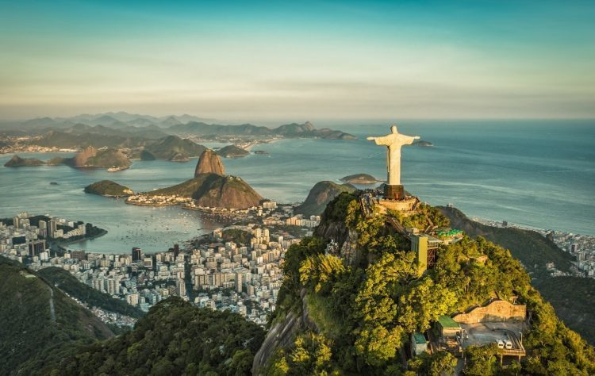
Descrição:O Rio de Janeiro é uma grande cidade brasileira à beira-mar, famosa pelas praias de Copacabana e Ipanema,
pela estátua de 38 metros de altura do Cristo Redentor, no topo do Corcovado, e pelo Pão de Açúcar, um pico de granito com teleféricos
até seu cume. A cidade também é conhecida pelas grandes favelas. O empolgante Carnaval, com carros alegóricos, fantasias extravagantes e sambistas, é considerado o maior do mundo.
Significado: É uma cidade muito bonita, com pontos turísticos mais famosos do Brasil .
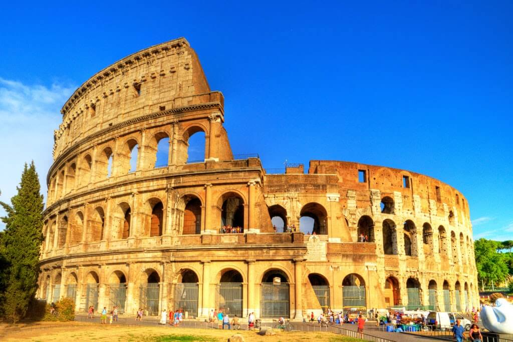
Descrição:Roma, a capital da Itália, é uma cidade cosmopolita, enorme, com quase 3.000 anos de arte, arquitetura e cultura
influentes no mundo todo e à mostra. Ruínas antigas como o Fórum e o Coliseu evocam o poder do antigo Império Romano. A Cidade do Vaticano,
sede da Igreja Católica Romana, tem a Basílica de São Pedro e os museus do Vaticano, que abrigam obras-primas como os afrescos da Capela Sistina de Michelângelo.
Significado: Tem uma história gigante e tem muitas igrejas bonitas .
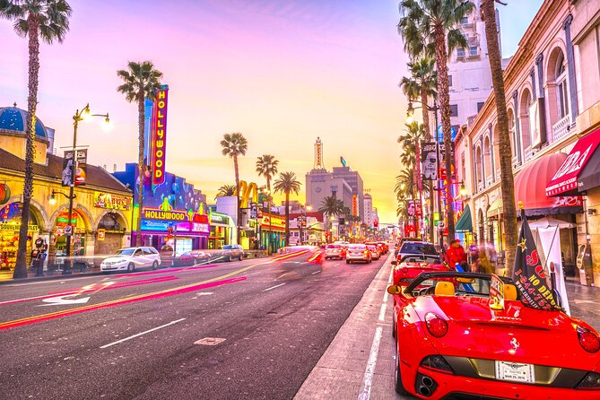
Descrição:Los Angeles é uma grande cidade do sul da Califórnia e também o centro da indústria de cinema e televisão do país.
Perto do famoso letreiro de Hollywood, é possível conhecer os bastidores das produções nos estúdios Paramount Pictures, Universal e Warner Brothers.
Na Hollywood Boulevard, o TCL Chinese Theatre exibe impressões de mãos e pés de celebridades na Calçada da Fama, uma homenagem a milhares de astros, e se pode comprar mapas das casas dos artistas.
Significado: Temos o melhor time de basquete da NBA, já foram feitos diversos jogos dentro da cidade.
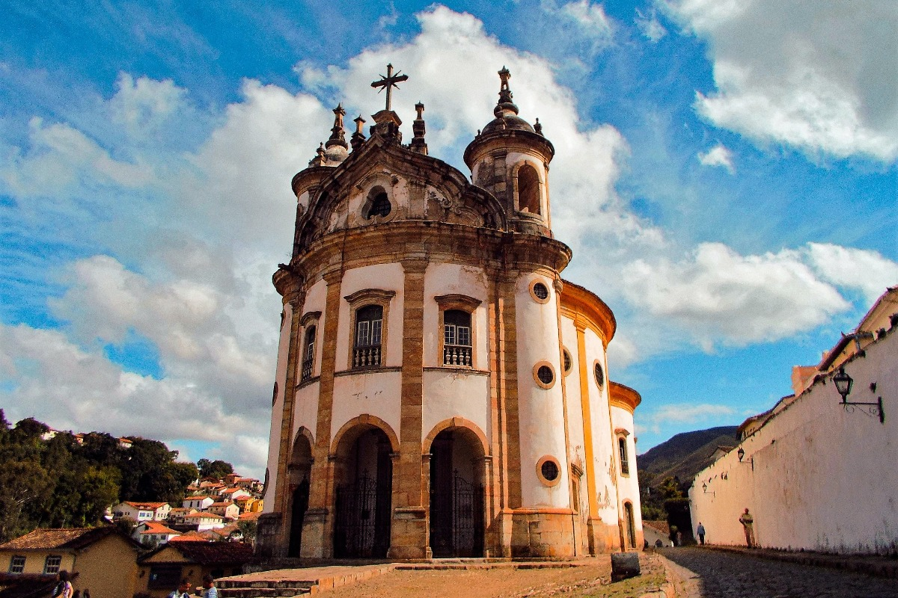
Descrição:Ouro Preto é uma cidade colonial na Serra do Espinhaço, na zona leste do Brasil. É conhecida pela arquitetura barroca,
que inclui pontes, fontes e praças, e pelas ruas calcetadas íngremes e sinuosas. A Praça central de Tiradentes recebeu o nome do mártir da
independência brasileira. Existem várias igrejas e capelas por toda a cidade, incluindo a Igreja de São Francisco de Assis, do século XVIII.
Significado: A cultura religiosa é muito bonita e tem uma forte história do Brasil.

Descrição:Tóquio, a movimentada capital do Japão, combina o estilo ultramoderno com o tradicional, desde arranha-céus iluminados por
neon a templos históricos. O opulento santuário xintoísta Meiji é conhecido por seu altíssimo portão e pelas florestas circundantes.
O Palácio Imperial fica localizado em meio a jardins públicos. Os muitos museus da cidade oferecem exposições que variam de arte clássica (no Museu Nacional de Tóquio) a um teatro kabuki reconstruído (no Museu Edo-Tokyo).
Significado: A cultura de drift e carros, Velozes e Furiosos, Animes e tem coisas legais para comprar.
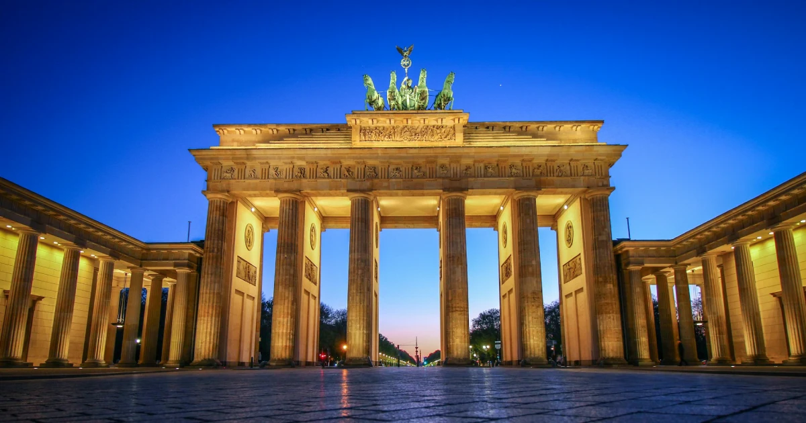
Descrição:Berlim, a capital da Alemanha, existe desde o século XIII. Algumas recordações da história turbulenta da cidade no século XX são o Memorial do Holocausto e as ruínas do Muro de Berlim, repletas de grafites.
Usado como divisão de fronteiras durante a Guerra Fria, o Portão de Brandemburgo, construído no século XVIII, tornou-se um símbolo da reunificação. A cidade também é conhecida por seu cenário artístico e seus monumentos modernos,
como a Filarmônica de Berlim, dourada e de telhado triangular, construída em 1963.
Significado: Tem um significado muito importante na história do mundo com o Muro de Berlim.

Descrição:Madri, a capital da Espanha, situada no centro do país, é uma cidade de avenidas elegantes e parques grandes e bem cuidados, como o Buen Retiro. Ela é famosa pelos ricos acervos de arte europeia, entre os quais estão as obras de Goya,
Velázquez e outros mestres espanhóis no Museu do Prado. O centro da antiga Madri da época da Casa de Habsburgo é a Plaza Mayor, ladeada por pórticos, e nas proximidades ficam o barroco Palácio Real e o Arsenal Real, que exibe armas históricas.
Significado: É uma cidade muito bonita e temos os melhores times de futebol da Europa.
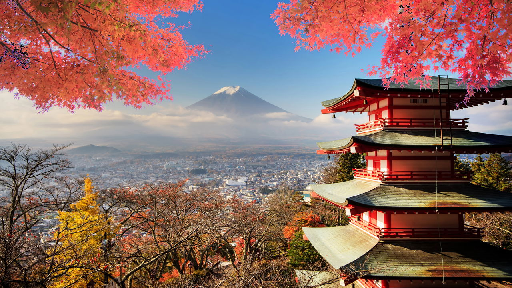
Descrição:Kyoto, antiga capital do Japão, é uma cidade da ilha de Honshu, famosa por seus vários templos clássicos budistas, jardins, palácios imperiais, santuários xintoístas e casas de madeira tradicionais. Ela também é conhecida pelas tradições formais,
como o jantar kaiseki, com vários pratos específicos, e as gueixas, geralmente encontradas no distrito de Gion.
Significado: É uma cidade imperial e muito bonita do Japão, que foge das técnologias atuais.
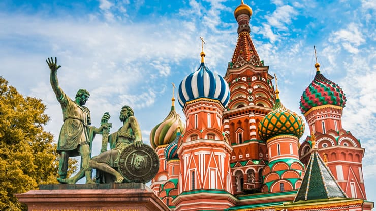
Descrição:Moscou, situada às margens do rio de mesmo nome, no oeste da Rússia, é a capital cosmopolita do país. Em seu núcleo histórico está localizado o Kremlin, um complexo que abriga a residência do presidente e tesouros czaristas no Palácio do Arsenal.
Do lado de fora de suas paredes fica a Praça Vermelha, centro simbólico da Rússia, que conta com o Mausoléu de Lenin, a abrangente coleção do Museu Histórico do Estado e a Catedral de São Basílio, conhecida pelas cúpulas coloridas em forma de cebola.
Significado: Contém uma arquitetura muito bonita e fora do comum.
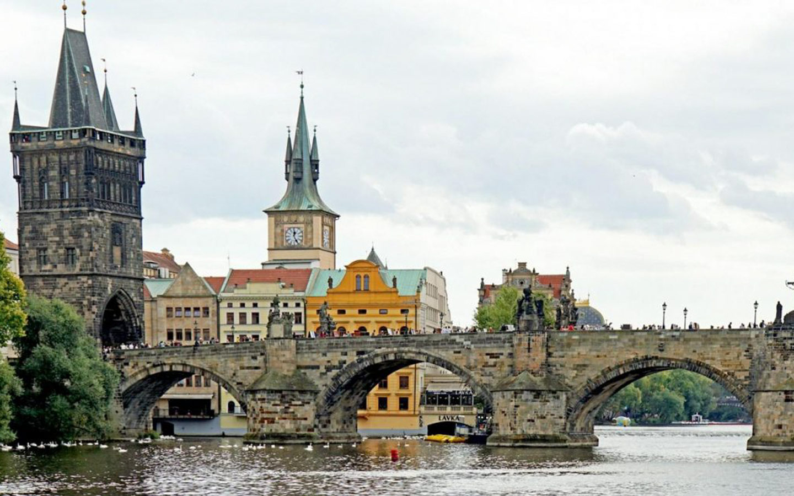
Descrição:Praga, a capital da República Tcheca, é dividida pelo rio Moldava. Apelidada de "a cidade dos cem pináculos", ela é conhecida pela Praça da Cidade Antiga, no coração do seu centro histórico, com construções barrocas coloridas, igrejas góticas
e o Relógio Astronômico medieval, que faz uma apresentação animada de hora em hora. Concluída em 1402, a Ponte Carlos, exclusiva para pedestres, é cercada por estátuas de santos católicos.
Significado: Tem a ponte Carlos e uma arquitetura medieval preservada.
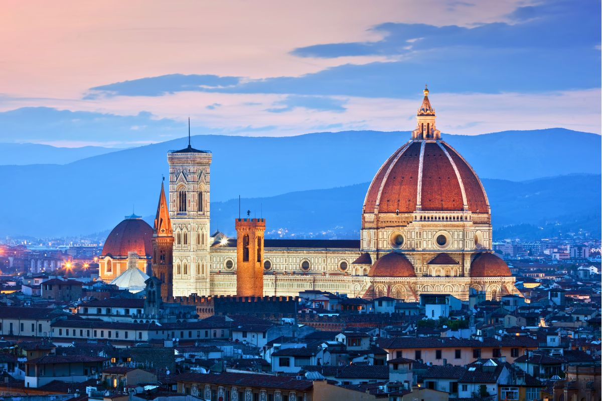
Descrição:Florença, capital da região Toscana, na Itália, abriga muitas obras de arte e arquitetura renascentistas. Um dos seus pontos turísticos mais emblemáticos é o Duomo, catedral com cúpula de telhas de terracota, projetada por Brunelleschi, e o campanário de Giotto.
A Galleria dell'Accademia exibe a escultura "Davi", de Michelangelo. A Galeria Uffizi exibe "O Nascimento de Vênus", de Botticelli, e "A Anunciação" de Da Vinci.
Significado: É o berço do renascentismo que é de suma importância na história da arte.
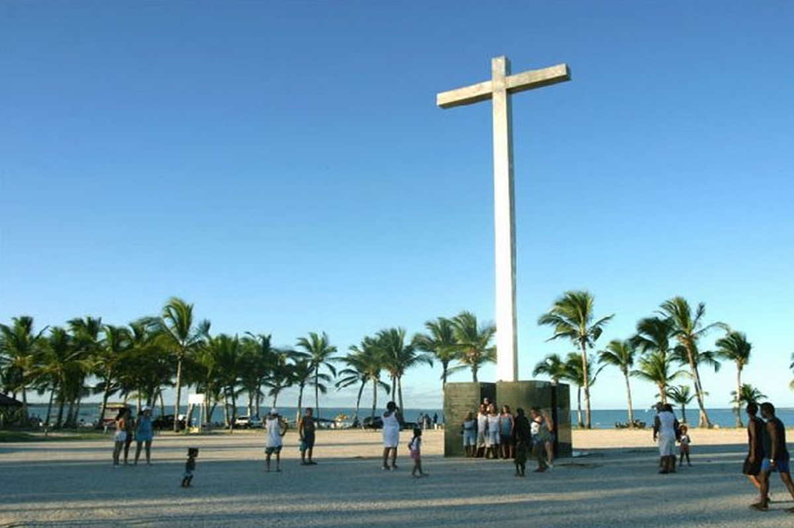
Descrição:Santa Cruz Cabrália, na Bahia, é reconhecida como o local onde ocorreu a primeira missa no Brasil, celebrada em 26 de abril de 1500 na praia de Coroa Vermelha. Situada no extremo sul baiano, a cidade teve papel crucial na colonização, com a região inicialmente nomeada
como Terra de Santa Cruz devido à cruz erguida pelos portugueses.
Significado: É um local muito bonito, com forte história do Brasil.
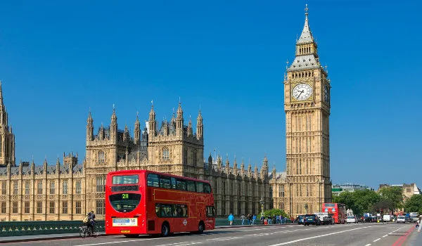
Descrição: Big Ben é um grande sino instalado na torre noroeste do Palácio de Westminster,
a sede do Parlamento Britânico, localizado em Londres, no Reino Unido.
Significado: É uma das marcas registradas da cidade de Londres, além de aparecer em diversos filmes.